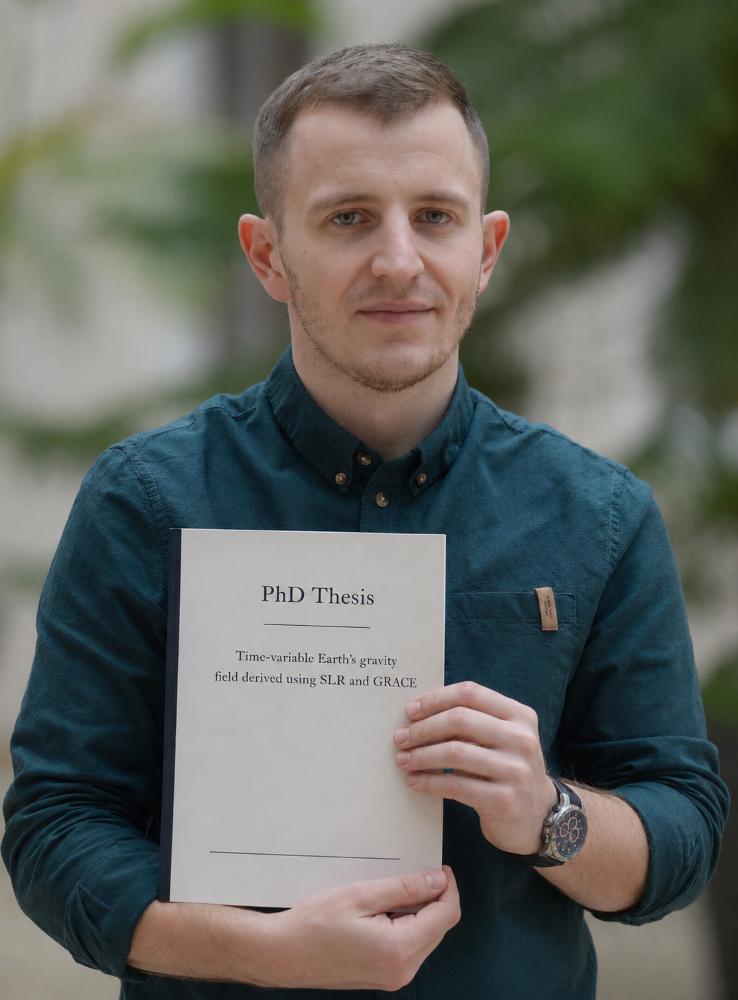

Curriculum vitae
Filip Gałdyn, PhD
geodesy | satellite data | data engineering | research
PhD researcher at Wroclaw University of Environmental and Life Sciences. This page gathers my academic profiles, publications, and contact details.
Contact me at: filipgaldyn@upwr.edu.pl
Time since PhD
0
Days
0
Hours
0
Minutes
Since 2 July 2026, 15:00 CET.